Oponentes


Cobalion

Consejos para vencer
Cobalion recibe menos daño si no sufre un problema de estado. Sin embargo, cada vez que se cure de un problema de estado, aumenta su resistencia en +2 a este hasta volverse inmune.
En la barra de PS 1, Cobalion se curará de problemas de estado cuando sus PS bajen del 50%. A partir de la barra de PS 2, además, se curará de problemas de estado también cada vez que use su movimiento compi.
Cobalion cuenta desde el principio con: Resistencia Quemadura +7, Resistencia Parálisis +1 y Resistencia Veneno +9. No tiene resistencias a Sueño y Congelación hasta que se cure de ellas. Al llegar a +10, se vuelve inmune a dicho problema de estado.
La mayoría de sus movimientos son físicos. Es recomendable reducir su Ataque o aumentar nuestra Defensa. Cuidado en la barra de PS 3, pues usará Espada Santa y aumentará su índice de críticos.
Más información

Azelf

Consejos para vencer
Los aumentos y descensos en la Defensa y Defensa Especial afectan más de lo normal a ambos bandos. Azelf se aprovecha de esto con sus pasivas Ataque Defensa ↓ +4 y Ataque Defensa Especial ↓ +4.
Cuando los PS de Azelf estén por encima de 50%, recibe menos daño de movimientos físicos. Y, cuando estén por debajo de 50%, recibe menos daño de movimientos especiales. A partir de la barra de PS 3, esto afectará también a los movimientos compi.
Cuando los PS de Azelf estén por encima de 50%, ejecuta movimientos especiales. Y, cuando estén por debajo de 50%, ejecuta movimientos físicos. Su movimientos compi siempre será físico.
Más información
Registeel

Consejos para vencer
Los aumentos y descensos en la Defensa y Defensa Especial afectan más de lo normal a ambos bandos. Registeel se aprovecha de esto aumentando su Defensa y Defensa Especial con movimientos y pasivas, además de recibir aún menos daño si sus defensas aumentan.
Los efectos de campo activados por Registeel serán permanentes, a menos que se consigan anular. Registeel se aprovecha de esto al comienzo de la barra de PS 1 con At. físicos ↓ y At. especiales ↓, al comienzo de la barra de PS 2 con Barra mov. acelerada y al comienzo de la barra de PS 3 con Bloqueo probl. estado.
Cuando sus PS bajan de 50%, en la barra de PS 1 bajará 2 niveles la Defensa de todo tu equipo, en la barra de PS 2 bajará 2 niveles la Defensa Especial, y en la barra de PS 3 bajará 2 niveles la Defensa y la Defensa Especial.
Empezará el combate con Defensa Férrea. Al comienzo de las barras de PS 2 y 3 obtendrá Siguiente crítico y Siguiente certero y usará Terremoto. Ten cuidado en las barras de PS 2 y 3 cuando sus PS bajen del 50%: puede usar Hiperrayo (barra de PS 2) y Gigaimpacto (barra de PS 3).
Más informaciónCombates

VS. Cobalion

El primer patrón de movimientos es: Encanto, Onda Trueno y movimiento de entrenador. Si este último no recupera PM, reinicia. Baja el Ataque de Cobalion al máximo y luego usa repetidamente Onda Trueno. Puedes usar Foco Resplandor para rematar alguna de las barras de PS. Atento a la subida de Ataque para volver a usar Encanto y a los momentos en los que se cura de la parálisis para usar Onda Trueno.
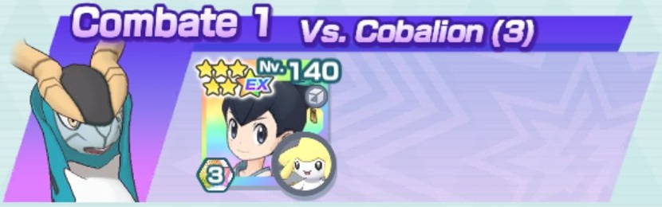

VS. Azelf

Lo más complicado es el principio: debe recuperar al menos 1 PM de ambos movimientos de entrenador. Usa todo el tiempo Picotazo Veneno. Guarda el movimiento sincro para la barra de PS 3, justo antes de usar el movimiento compi que debe acabar con Azelf.
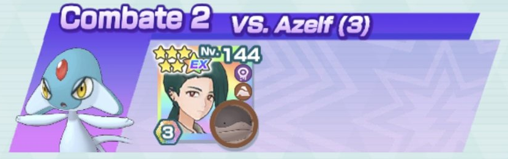

VS. Registeel

Empieza con Sable Místico y continúa con Esfera Aural hasta que la Defensa Especial de Registeel esté a -6. Usa el movimiento de entrenador (no importa si no recupera PM) y continúa con Esfera Aural. Si tienes suerte con los retrocesos y sin que te paralice, es un combate sencillo. Si vas sobrado de barras en la barra de PS 3 puedes rematarlo a base de Sable Místico.
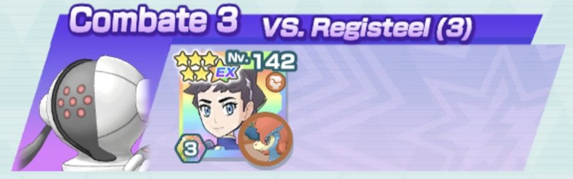
VS. Cobalion

Baja el contador al principio con Impactrueno hasta 1, usa el movimiento de entrenador y después el movimiento compi para poner Campo Eléctrico gracias al rol de Entorno. El movimiento sincro ignora las pasivas de Cobalion. Procura que esté paralizado cuando uses el movimiento compi.
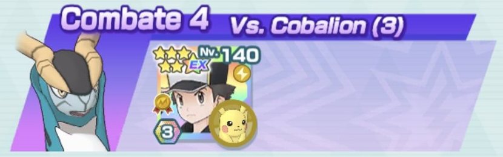
VS. Azelf

Envenénalo siempre que puedas y luego ataca todo el tiempo con Avalancha para hacerlo retroceder. Atiende a la Zona Veneno para que Glimmora pueda ir curándose.
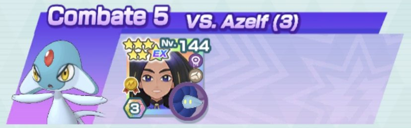
VS. Registeel

Inicia el combate usando Bucle Arena. Usa el movimiento de entrenador cuando recibas daño para comenzar la regeneración de PS. Usa Tormenta Arena con el contador a 4 y, acto seguido, Terremoto de Poder Celestial. A partir del movimiento compi, usa seguidamente el movimiento sincro (atendiendo a la tormenta de arena para que no cese).
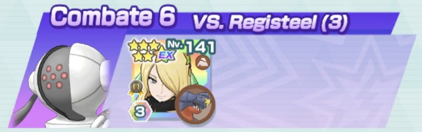
VS. Cobalion

Combate muy largo y que requiere mucha paciencia. Reserva el movimiento sincro para la barra de PS 2 e intenta dejar las Pociones todo lo que puedas para el final. A partir de la barra de PS 2 vigila el uso de Onda Vacío para paralizar a Cobalion y fíjate si puede curárselo en breve. Por ejemplo, si Cobalion tiene el contador a 1, espera a que ataque y paralízalo después de su movimiento compi para que la resistencia a la parálisis no aumenten en vano.
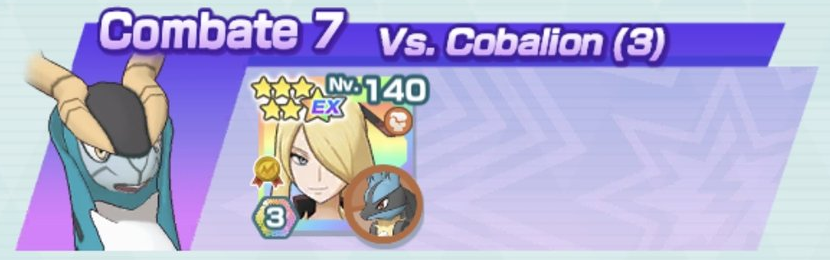
VS. Azelf

Inicia con Ventisca y congela a Azelf para poder usar el movimiento de entrenador sin preocuparte de que te dañe. Con Rayo Hielo de Alas Gélidas te ventilas la barra de PS 1, así que usa el movimiento compi a partir de la barra de PS a 2. Guarda Protección para la barra de PS 3 si te ves en peligro.
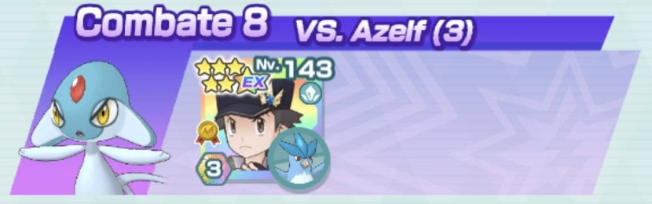
VS. Registeel

Al principio intercala los Directos con Patada Relámpago. Como Registeel comienza con Tumba Rocas, aprovéchate de la pasiva de Zapdos para que un ataque no tenga coste. Pon la primera Zona Lucha para ir curándote y resistiendo golpes y la segunda antes del movimiento compi. Usa el movimiento compi cuando acabes con la barra de PS 1 y empiece la 2. Con suerte, acabará con él.
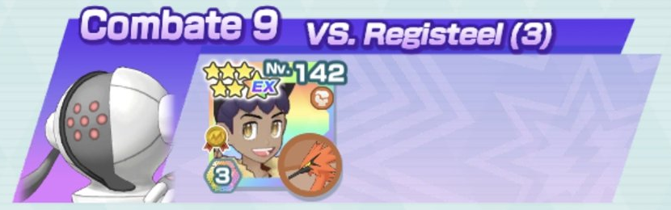
VS. Cobalion

No hay mucho que decir. Usar el movimiento de entrenador, los movimientos sincro cada vez que puedas y todo el tiempo Cabeza de Hierro. Entre que puede retroceder y lo que se cura, Cobalion apenas le hace daño.
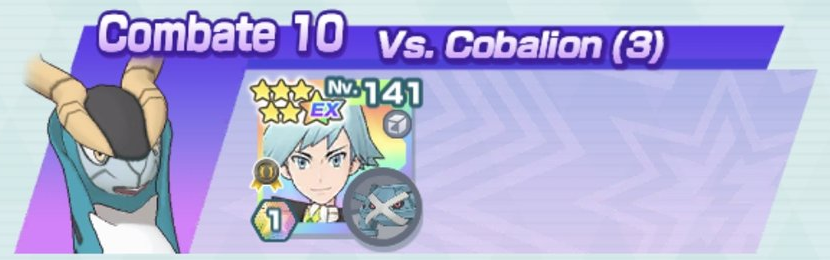
VS. Azelf

Hay que tener mucha, pero que MUCHA suerte. Mínimo debe recuperar PM una vez el movimiento de entrenador, y usa este cuando empieces a recibir daño para no malgastar la regeneración de PS. Aprovecha los retrocesos para ir subiendo las defensas. Y reza para que no te queme...
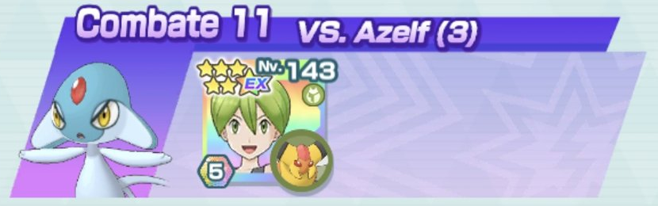
VS. Registeel

Usa los movimientos de entrenador al principio y el movimiento sincro cada vez que tengas opción para aumentar tus defensas. Registeel debe permanecer siempre confuso para que Articuno no pare de curarse con cada movimiento.
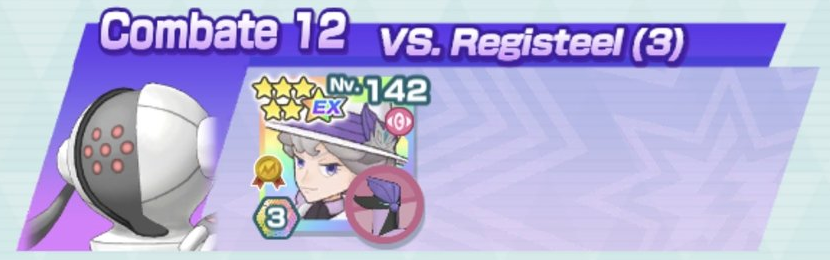
VS. Cobalion

Durante el previo al primer movimiento compi solo usarás Picotazo, tres veces Nitrocarga y el movimiento de entrenador (que debe recuperar PM). Tras el primer movimiento compi, sigue con Picotazo, otro movimiento de entrenador cuando se acabe la regeneración de PS y los Directo. Entonces usa el movimiento compi SOLO si Cobalion está al 70% de vida aprox y está quemado. Esto último vale tanto para la barra de PS 2 como la 3.
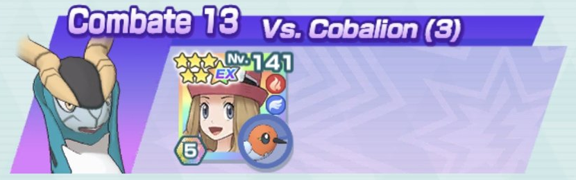
VS. Azelf


Incordia con el retroceso de Eevee e Hipnosis de Sigilyph. Usa un par de veces el movimiento compi de Eevee para buffar a Sigilyph o curarse en caso de apuro. Procura que Azelf esté dormido cuando Sigilyph use su movimiento compi.
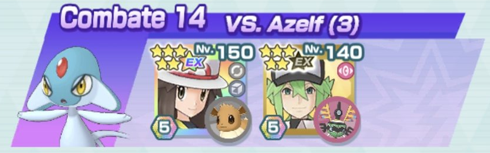
VS. Registeel


Solrock ayuda ayuda a retroceder con Cabezazo Zen junto a Triple Flecha de Decidueye. Usa al menos una vez el movimiento de entrenador de Vito para aumentar su Defensa y aguantar posibles golpes, y su Velocidad, ya que Decidueye consume muchas barras.
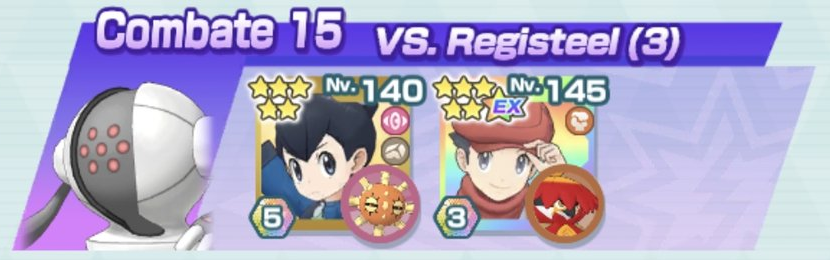
VS. Cobalion


Usa los dos PM del movimiento de entrenador de Registeel y aumenta la Velocidad del equipo con Garra Metal. Meteoimpacto de Solgaleo ignora las pasivas de Cobalion así que pégale a discreción. Atiende a los PS de Registeel antes de comenzar la barra de PS 3, pues Cobalion la inicia con Espada Santa.
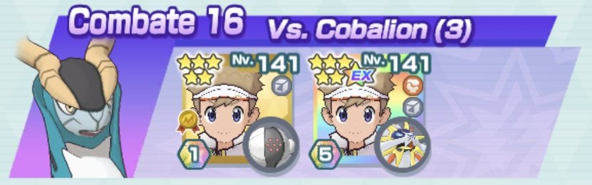
VS. Azelf


Usa primero el movimiento de entrenador de Nereida y no uses el de Ástrid hasta que pierda su regeneración de PS. La primera barra de PS le cuesta un poco a Araquanid, intenta que resista hasta llegar al 50% para que su Chupavidas sea más efectivo. Aumenta todos los stats que puedas con Sigilyph para hacer un daño descomunal.
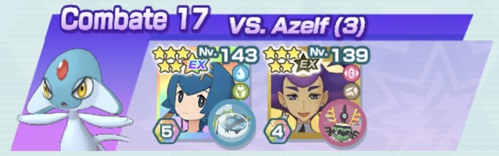
VS. Registeel


Depende mucho de la suerte con la que hagas retroceder con Impresionar. Si no tienes a Morti EX no uses el movimiento compi de Mismagius y céntrate en usar el de Nidoking. Si consigues que la Defensa de Registeel haya bajado lo suficiente, Nidoking hará mucho daño. Reserva el movimiento dinamax para rematar.
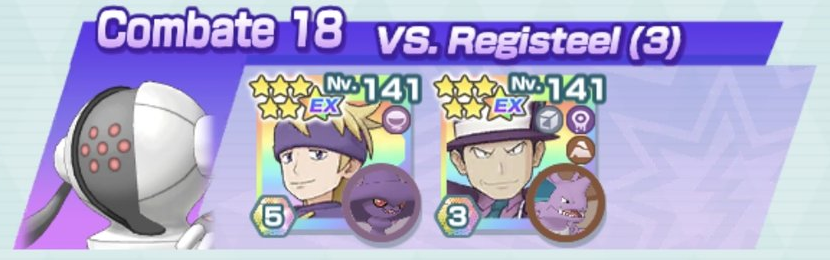
VS. Cobalion

Combate rapidísimo sin consumo de barras, que deja los stats de Cobalion por los suelos e incluso puedes hacerlo retroceder. Procura que el círculo no desaparezca, pues hace que Virizion se cure y tenga Siguiente sin coste. Reserva el movimiento sincro para la barra de PS 3.
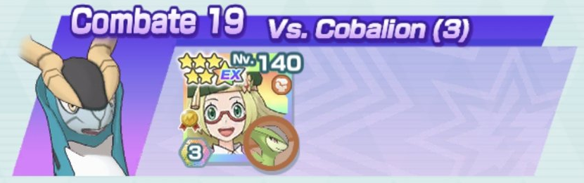
VS. Azelf


Mientras Lapras duerme a Azelf, Solgaleo hace todo lo demás. No hay mucho más que añadir.
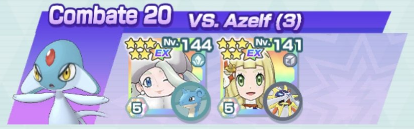
VS. Registeel


Usa todo el rato Malicioso con Watchog mientras se boostea Machamp. Cuando Registeel use Golpe Cuerpo por primera vez, usa Def. Esp. X Múltiple de Aloe y vuelve a usar Malicioso para que el movimiento compi de Watchog llegue antes que el de Registeel. La barra de PS 1 debes dejarla muy cerca del 50% antes de que Machamp use su movimiento compi. Y ya es tener suerte para recuperar PM en el movimiento de entrenador de Aloe.
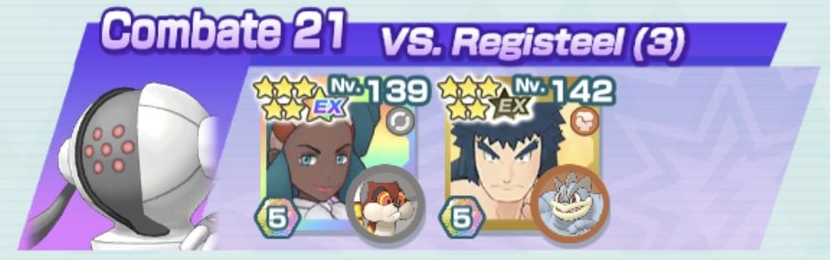
VS. Cobalion


Golem solo está para poner el pecho. Reshiram debe bajar el Ataque y Ataque Especial de Cobalion al máximo y entonces empezará a usar Llama Azul. Si Cobalion aumenta alguno de sus ataques, vuelve a bajarlo con Rugido de Guerra. Cuanto más aguante Golem, más podrá atacar Reshiram sin preocuparse.
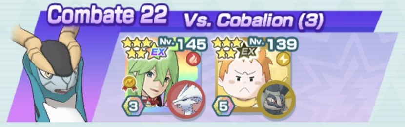
VS. Azelf


No uses el movimiento de entrenador de Ciprés hasta que Duraludon pierda la regeneración de PS por el suyo. Procura usar Pulso Dragón en lugar de Metaláser para poder recuperar los PS perdidos y, además, aprovechar la casilla llenabarras. Atiende a cuándo usar los movimientos físicos y especiales de cada compi.
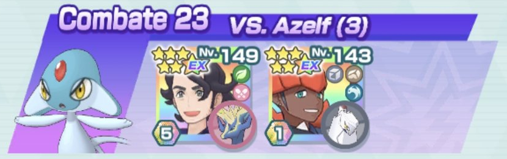
VS. Registeel


Entre los dos bajan la Defensa de Registeel muy rápido y se pueden ir curando con Pociones. Usa el primer movimiento compi con Marowak para obtener la doble determinación y espera a llegar a la mitad de la barra de PS para que Hariyama use el suyo. Me ha sorprendido mucho el daño de Hariyama.
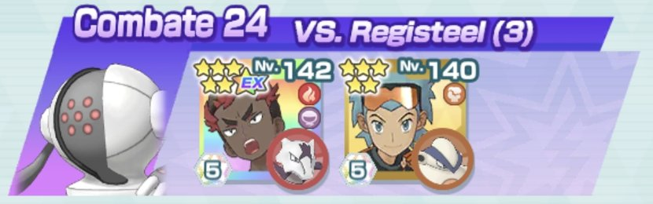
VS. Cobalion


Jugador terminará de aumentar el Ataque de Kyurem e intentará aguantar el tipo mientras Kyurem destroza a Cobalion.
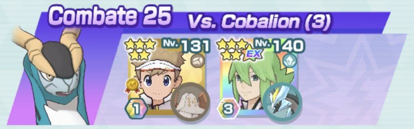
VS. Azelf


Intenta que Gastrodon aguante al menos hasta la barra de PS 2. Guarda los movimientos de entrenador de Lucho. En la barra de PS 2, antes de poder usar el movimiento compi de Genesect, usa uno para liquidar la barra de PS 2. Usa el siguiente al inicio de la barra de PS 3 y con Tecno Shock fulminas a Azelf.
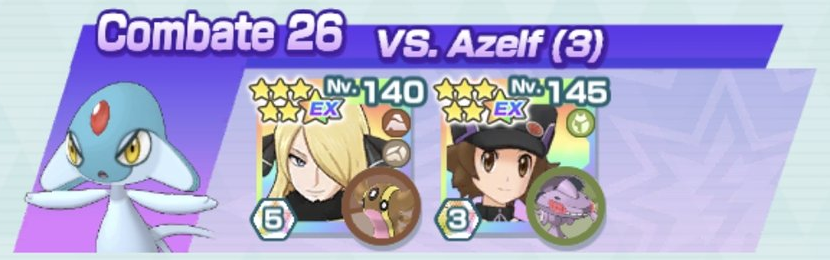
VS. Registeel


Kalm debe recuperar 1 PM de su movimiento de entrenador. Intenta tener buen timing entre las formas de Greninja: la de tipo agua se cura y protege de la parálisis de Golpe Cuerpo o Rayo de Registeel; y la de tipo siniestro no sufre bajadas de características. Ataca todo lo que puedas con Incineroar para reducir el Ataque y la Defensa de Registeel y poder destrozarlo con su movimiento compi.
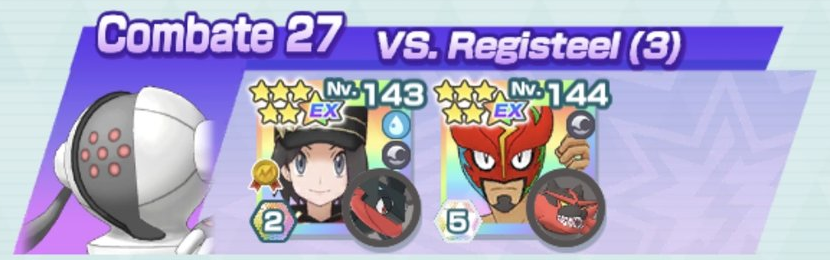
VS. Cobalion


Arcanine usará constantemente Rapidez, solo usará Hiperrayo cuando pueda sobrepasar el 50% o acabar con la barra de PS de Cobalion. Atiende a cuándo usar Onda Trueno para que Cobalion no aumente la resistencia a la parálisis. Raichu usará siempre el movimiento compi para ir curando, úsalo solo con Arcanine si ves que ya puede derrotar a Cobalion.
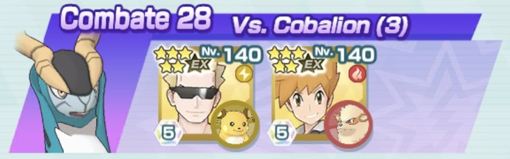
VS. Azelf


Lo ideal sería que Catleya recuperara PM en ambos aumentos de defensas. Usa todo el tiempo Estoicismo con Volcarona hasta que la barra de PS de Azelf se aproxime a la mitad. Entonces, usa Hiperrrayo para fulminarlo. Usa los movimientos compi en función de si necesitas curar (Sableye) o atacar (Volcarona). Al inicio de la barra de PS 3 usa un Hiperrayo de Volcarona, dejará seco a Azelf.
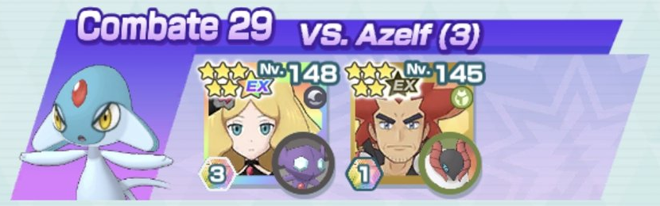
VS. Registeel


Mientras Sirfetch'd se boostea, Cobalion irá bajando la Defensa de Registeel. Cuando acabe, Jugador podrá usar su movimiento de entrenador. Intenta que Sirfetch'd llegue con el máximo de defensa a la barra de PS 3 para que destruya a Registeel a base de Asalto Estelar.
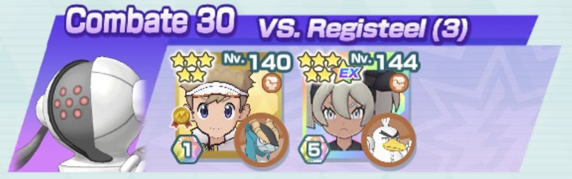
VS. Cobalion


Sí, la unidad de apoyo es la que pega y la de sabotaje la que tanquea. Lo ideal sería que Lira recuperara PM de su movimiento de entrenador, pero procura que mínimo lo haga Erika. El movimiento compi de Meganium hace bastante daño, así que vigila cuándo paralizar a Cobalion. Al inicio de la barra de PS 3, deja que ataque continuamente Vileplume parra que se cure con el sol y aguante los golpes de Cobalion. Si consigues llegar al menos al movimiento compi de Meganium cuando Cobalion está cerca de la mitad de los PS de su última barra, lograrás derrotarlo.
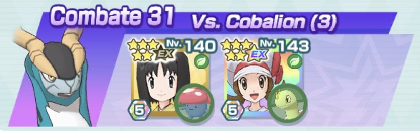
VS. Azelf


Intentaría recuperar PM en Día Soleado. Quizás al tener el rol de entorno no es necesario, pero por si acaso. Sceptile usará Lluevehojas en la primera mitad de las barras de PS y Recurrente en la segunda mitad. Mantén el tiempo soleado y el combate será un paseo.
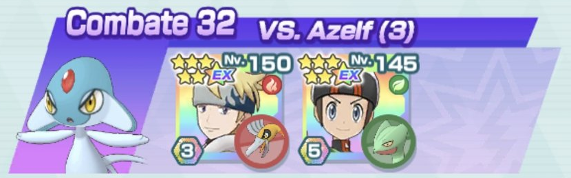
VS. Registeel


Intenta que Cintia recupere PM en su movimiento de entrenador. No uses Defensa X+ Múltiple de Maya hasta que Giratina use su movimiento compi (será el primero para que restaure las características bajadas). Al inicio de las barras 2 y 3 Giratina usará Golpe Umbrío para esquivar el Terremoto de Registeel. Intenta que los movimientos compi de Giratina (salvo el primero) haya Zona Fantasma.
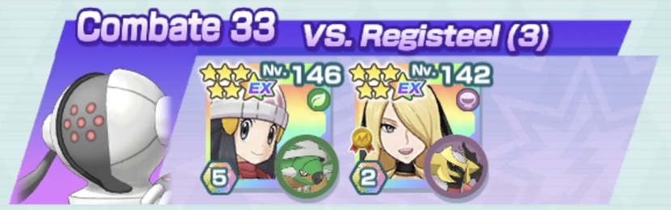
VS. Cobalion


Gerania debe recuperar PM en su movimiento de entrenador. Atiende a la parálisis y los daños que realiza Zebstrika. Destina las Pociones a Swanna, Camila puede curar a Zebstrika con su movimiento de entrenador. De hecho, cuantas más Pociones recupere Gerania, más llevadero es el combate.
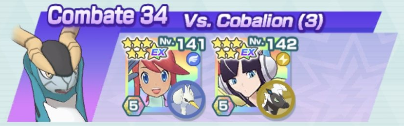
VS. Azelf


No uses el movimiento de entrenador de Ciprián hasta que Azelf no haya usado Energibola. Si no recupera PM, reinicia. Es mejor tener uno más en la recámara por si acaso Zygarde se encuentra en apuros. Mientras Azelf tenga relevo imposible y uses los movimientos de Zygarde cuando corresponda, todo debe ir bien.
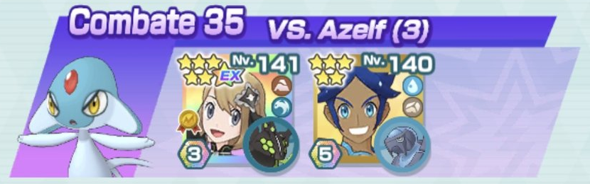
VS. Registeel


Tyranitar únicamente usará Avalancha para incordiar y allanar el terreno a Leafeon. Usa el movimiento sincro de Leafeon en las barras de PS 1 y 3. Como Leafeon será el que tanquea, cuantas más veces recupere PM Síntesis, más fácil será completar el combate.
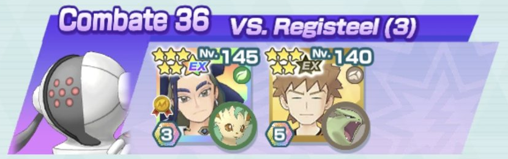
VS. Cobalion


Comienza envenenando con Crobat y atacando con Onda Ígnea de Volcanion. Cuando gane resistencia al veneno, empieza a quemarlo con Volcanion. En la barra de PS 3, quema a Cobalion, usa el movimiento sincro y con un Onda Ígnea ya lo derrotarás.
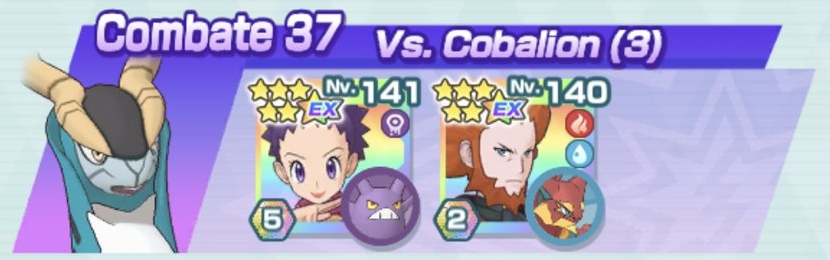
VS. Azelf


Al principio cuesta porque Rayquaza tiene que tanquear los golpes, así aumentarán sus características en lugar de bajar las de Psyduck. Misty debe recuperar 1 PM de su movimiento de entrenador por si se acaba quedando corta de Pociones. El primer compi lo usará Rayquaza para megaevolucionar pero los sucesivos lo hará Psyduck para ir curando. Usa Cometa Draco cuando los PS de Azelf estén por encima del 50% y Ascenso Draco cuando estén por debajo.
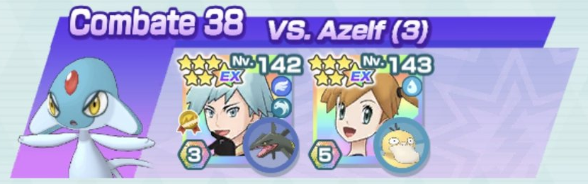
VS. Registeel


Hay que tener mucha paciencia. Jugador debe recuperar PM de su movimiento. Usa el movimiento de entrenador de Lotto para que Conkeldurr tenga la Defensa al máximo nada más empezar. Alterna Golpe Roca y Puño Drenaje en función de si necesitas curarte o bajar la Defensa de Registeel. Los movimientos especiales hacen mucho daño a Conkeldurr así que ve con cuidado. En este combate te interesa que Regissteel te paralice. Usa el movimiento compi de Torchic para ir curando. Usa solo el de Conkeldurr para finalizar el combate.
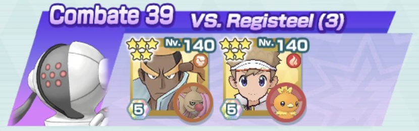
VS. Cobalion


Intenta hacer todo el daño que puedas porque Infernape es de papel. Si tienes suerte de que Bruno recupere Pociones, el combate no es tan complicado. Como siempre, vigilar la parálisis para que Cobalion no acabe inmune a ella. Como Latios bajará la Defensa Especial de Cobalion, Infernape solo usará Llamarada.
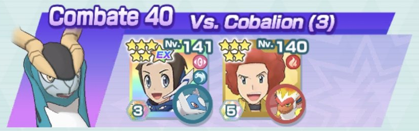
VS. Azelf


Tan solo es necesario que Lia recupere PM en su movimiento de entrenador. Comfey irá curando al equipo con su movimiento compi, además del sustain que ya tiene Azumarill. Procura dejar siempre a Azelf bajo ataduras para maximizar el daño de Comfey y, como siempre, alterna sus movimientos según los PS de Azelf.
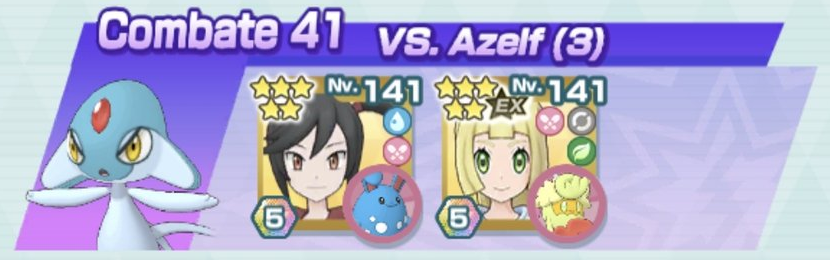
VS. Registeel


Si ejecutas bien los movimientos, puedes tener todo el tiempo dormido a Registeel: Canto, turno de Lucario, turno de Primarina, Canto y repetir. Durante la primera mitad de la barra de PS 1 Lucario usará Onda Vacío (o Puño Incremento si megaevoluciona) para que la barra no se resienta hasta que Primarina consiga subir la Velocidad del equipo. Cuidado en la barra de PS 3 ya que Registeel es inmune a problemas de estado.
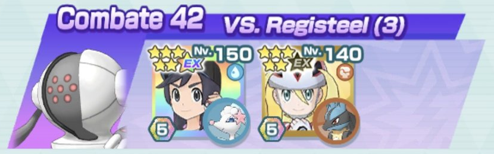
VS. Cobalion


Mientras Clefable tanquea gracias a su aumento de Defensa y Evasión, Dragapult puede pegar a Cobalion tranquilamente. Usa el movimiento compi de Clefable para que el equipo se vaya curando. Dragapult hace suficiente daño como para prescindir de su movimiento compi en favor de ir curándose.
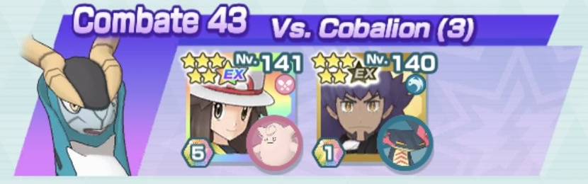
VS. Azelf


Requiere mucha suerte con los retrocesos de Exeggutor. Ho-Oh siempre usará el movimiento compi para que todo el equipo se favorezca del sol. Usa Sofoco cuando los PS de Azelf estén por encima del 50% y Fuego Sagrado cuando estén por debajo. Atiende a la regeneración de PS de Exeggutor.
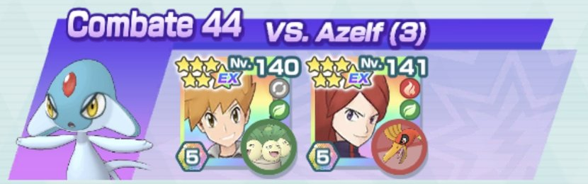
VS. Registeel


Xatu se limita a retroceder y confundir a Registeel. Es importante que Registeel se mantenga confuso para que los movimientos de Hatterene sean más poderosos. Usa el movimiento de Xatu siempre que necesites que tenga regeneración de PS. Hatterene tiene Ataque Defensa ↓ +2 más que nada para mermar la fuerza de Registeel.
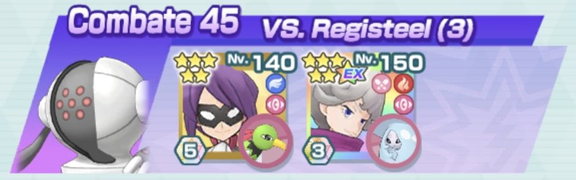